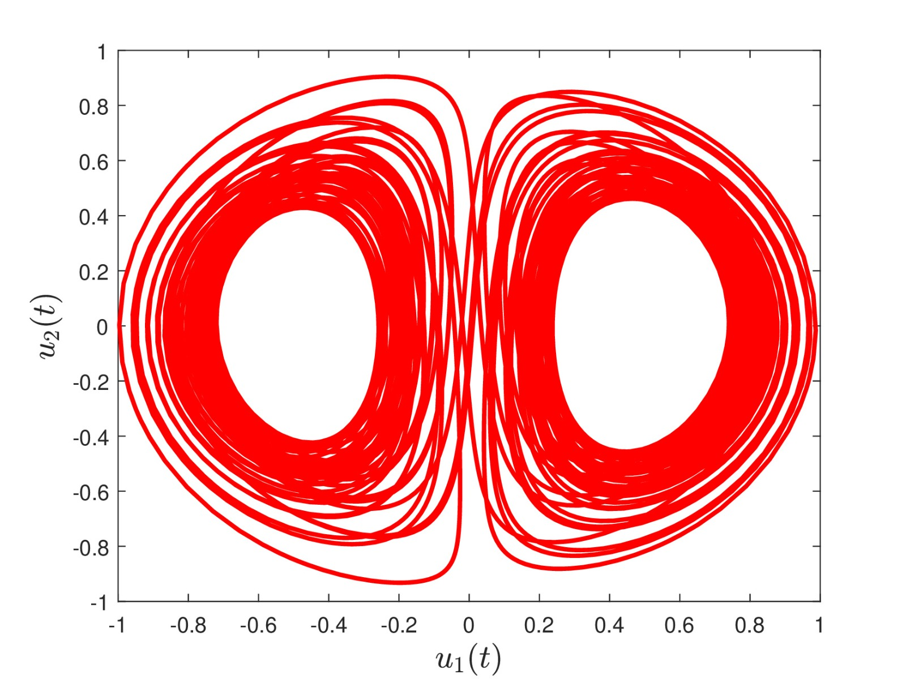
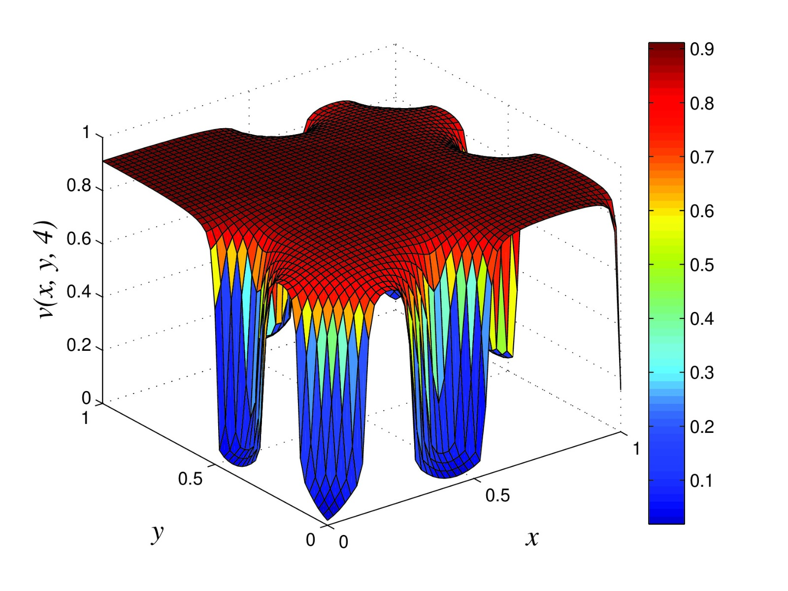
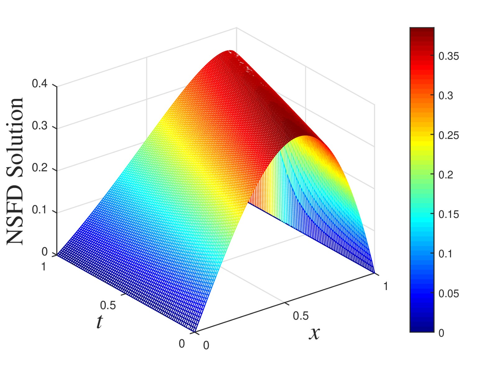
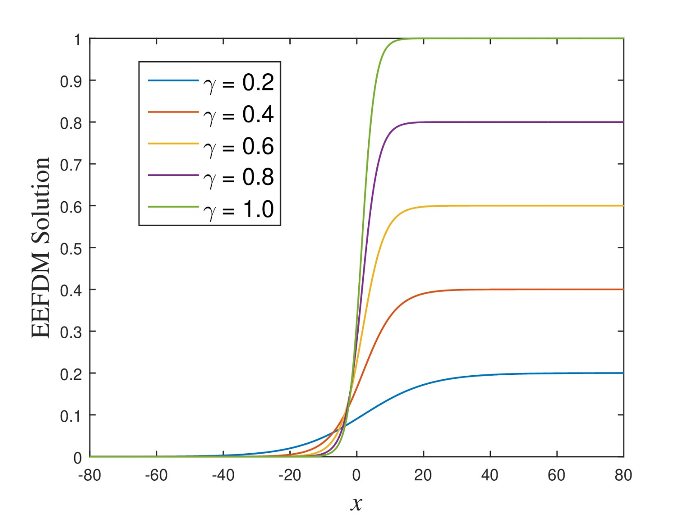
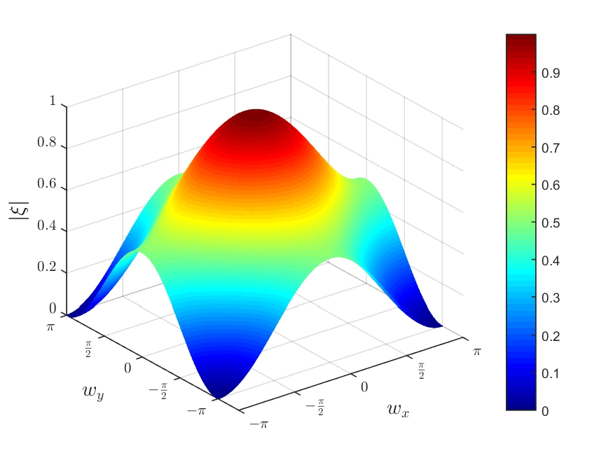
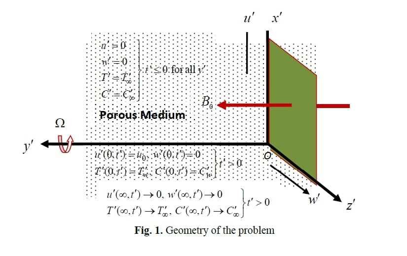

Biography & Academic Journey
My research interests lie in the design and implementation of numerical methods, computational fluid dynamics, mathematical modelling of dynamical systems, fractional calculus, and machine learning.
Lecturer
University of the Witwatersrand
Currently serving as a lecturer in the School of Computer Science and Applied Mathematics in Johannesburg, South Africa, where I focus on advancing computational mathematics and mentoring the next generation of applied mathematicians.
Postdoctoral Research Fellow
Rhodes University
My research focused on constructing multidomain pseudospectral methods for fractional differential equations. Concurrently, I broadened my research horizon by engaging in multidisciplinary projects that bridged the gap between mathematical modelling and machine learning.


PhD in Mathematics
Nelson Mandela University
My PhD research focused on developing and implementing a structure-preserving numerical scheme for advection-diffusion-reaction equations. I developed a non-standard finite difference scheme for the preservation of a biofilm mathematical model and designed an accurate scheme for the Burgers-Huxley equation.



Master of Science (MSc)
Obafemi Awolowo University
Developed a mathematical model for simulating fluid flow in a rotating medium. I utilized the Laplace Transform method to obtain analytical solutions to benchmark numerical methods, specifically applying the finite difference technique in cases where closed-form solutions were not feasible.

Bachelor of Science (Hons) in Mathematics
Obafemi Awolowo University
Honours thesis titled: "Simple Mathematical Model for Urban Growth (Based on Economy and Geographical Factors)". I subsequently completed my mandatory one-year national youth service in Rivers State, Nigeria (2014–2015).